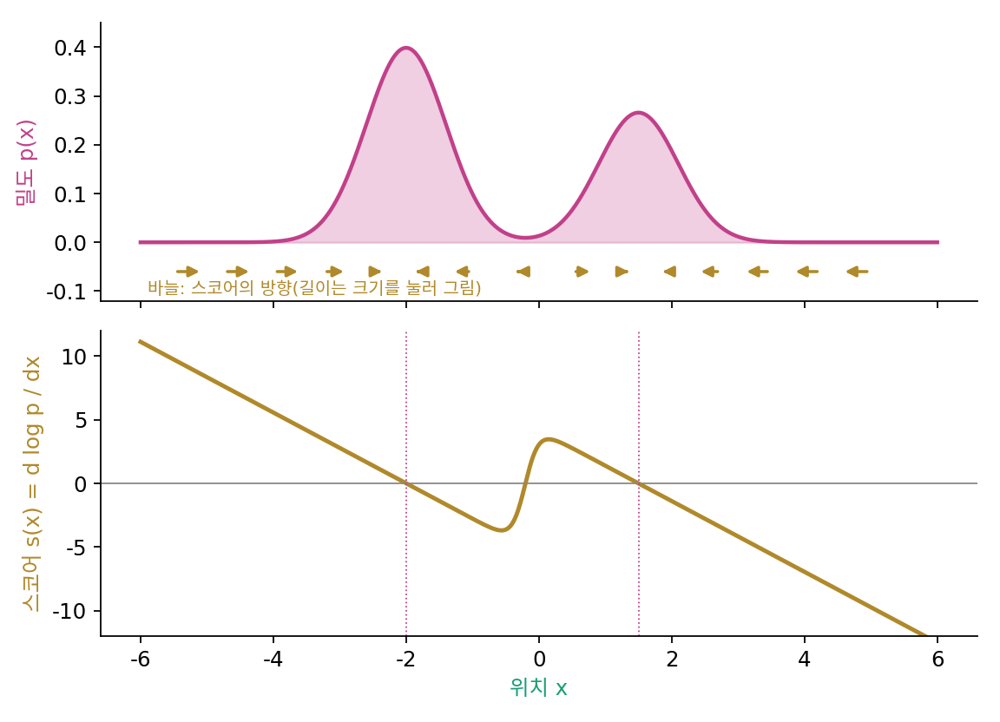
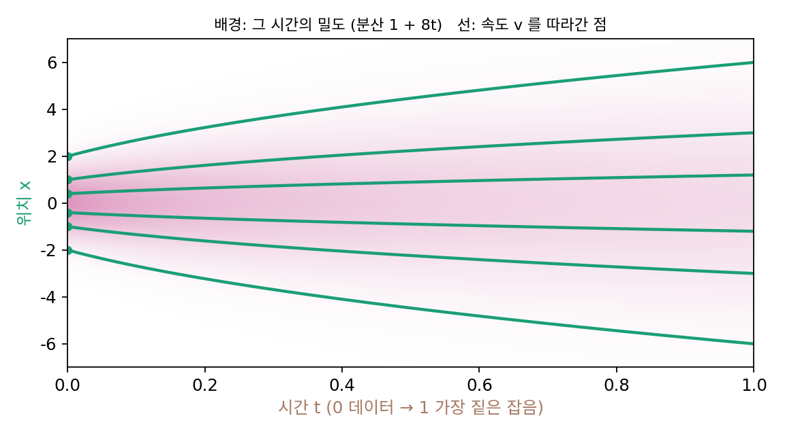

스코어: 퍼지는 흐름의 속도
분포를 무늬로 쪼개 통째로 되돌리는 길은 막혔다. 그렇다면 분포를 이루는 점 하나하나를 되돌릴 수는 없을까? 축제가 끝난 광장을 떠올려 보자. 붐비던 사람들이 한산한 쪽으로 흩어지는 모습을 영상으로 찍어 거꾸로 틀면, 사람마다 걸어온 길을 되밟아 처음 붐비던 모양으로 돌아간다. 그러려면 흩어지는 동안 각 자리의 사람이 어느 쪽으로 얼마나 빨리 걷는지 알아야 한다. 잡음이 섞이며 퍼지는 분포에서도 각 자리의 확률이 어느 쪽으로 얼마나 빨리 움직이는지 알면 된다.
열 방정식을 흐름으로 읽기
열 방정식을 다르게 읽어 보자. 확률은 어디서 생기거나 사라지지 않고 옆으로 흘러갈 뿐이다. 각 자리의 확률이 속도 v로 움직인다면, 한 자리의 밀도는 들어온 흐름에서 나간 흐름을 뺀 만큼 바뀐다. 광장의 한 구역 인원이 들어온 사람에서 나간 사람을 뺀 만큼만 바뀌는 것과 같다(연속 방정식). 흐름이 얼마나 생기는지는 열이 퍼지는 규칙(푸리에의 법칙, 물질이 퍼질 때는 픽의 법칙)이 정한다. 흐름의 양은 밀도의 기울기에 비례하고, 높은 곳에서 낮은 곳으로 향한다. 두 식을 합치면 열 방정식이 되고, 흐름의 속도만 따로 떼어 내면 다음과 같다.
속도가 ∇pt가 아니라 ∇pt/pt에 비례한다는 점이 눈여겨볼 곳이다. 흐름의 양이 같아도 그 흐름을 나눠 지는 확률이 적은 곳일수록 한 몫 한 몫이 빨리 움직인다. 그리고 ∇pt/pt는 로그 밀도의 기울기 ∇ log pt와 같다. 이 양에 이름을 붙인다.
로그 밀도의 위치 기울기 s = ∇ₓ log pt를 스코어 (로그 밀도가 가장 가파르게 오르는 방향과 그 가파름 / score)라 한다. 퍼지는 흐름은 스코어의 반대쪽, 곧 로그 밀도가 내려가는 쪽으로 흐르고, 밀도가 자기 크기에 비해 가파르게 줄어드는 곳일수록 빠르다. 아래 그림은 봉우리가 둘인 1차원 분포에서 스코어를 그린 것이다. 바늘은 가까운 봉우리 쪽을 가리키고, 봉우리 꼭대기와 두 봉우리 사이 골짜기에서 0이 되며, 밀도가 0에 붙어 버리는 바깥 벌판에서도 꺼지지 않고 오히려 커진다.

이 바늘을 이 책의 큰 비유인 「드래곤볼 레이더」로 기억해 두자. 넓은 평야 어딘가에 드래곤볼(데이터가 몰린 봉우리)이 숨어 있고, 참가자 손의 레이더 바늘은 지금 선 자리에서 볼 쪽, 곧 로그 밀도가 가장 빨리 커지는 쪽을 가리킨다. 그 바늘이 스코어다. 잡음이 섞이며 퍼지는 흐름은 바늘의 반대쪽으로 흐르니, 퍼지기 전으로 돌아가려면 바늘 쪽으로 걸으면 된다. 잡음이 짙을수록 레이더는 안개 속에 있는 셈이라 바늘이 흐릿하게 「대충 저쪽」만 가리킨다.
통계학에서 「스코어」는 흔히 모델의 매개변수 θ(세타)로 로그 확률을 미분한 ∇θ log pθ(x)를 가리킨다. 그쪽은 데이터를 고정하고 모델을 흔들어 보는 기울기이고, 이 책의 스코어는 분포를 고정하고 자리 x를 움직여 보는 기울기다. 이름만 같고 미분하는 변수가 다르다.
가우시안 구름은 어떻게 부푸나
가장 단순한 분포로 속도를 직접 적어 보자. 데이터가 정규분포 N(0, 1)이고 D = 4로 잡음을 섞으면, 잡음 분산 8t가 더해져 시간 t의 분포는 N(0, 1 + 8t)다. log pt = −x²/(2(1 + 8t)) + 상수이므로 스코어는 s = −x/(1 + 8t)이고, 퍼지는 속도는 v = 4x/(1 + 8t)다. 원점에서 먼 자리일수록 빨리 바깥으로 밀려난다.

ML에서: 그림 크기의 스코어
데이터가 그림이면 스코어도 그림과 같은 크기다. CIFAR-10(가로세로 32픽셀짜리 컬러 이미지 데이터셋)의 그림 한 장은 픽셀마다 빨강·초록·파랑 세 값이 있어 32 × 32 × 3 = 3072개의 숫자, 곧 3072차원 공간의 점 하나다. 그 점에서의 스코어 s(x, t)도 3072개의 숫자이고, 픽셀 값을 각각 어느 쪽으로 얼마나 바꾸면 「잡음 섞인 그림으로서 더 그럴듯해지는지」를 알려 준다. 디퓨전 모델은 그림과 잡음 수준을 받아 이런 그림 크기의 바늘을 내놓는 신경망 sθ(x, t)를 배운다. 신경망을 어떻게 배우는지는 뒤로 미루고, 이 장에서는 스코어를 정확히 아는 장난감에서 그 바늘로 무엇을 할 수 있는지를 본다.
문제 4. 같은 흐름, 다른 걸음
축제가 끝나 사람들이 줄지어 늘어선 긴 길에서 흩어지고 있다. 1분 동안 어떤 지점을 지나가는 사람 수는 그 지점에서 1미터 앞으로 갈 때 줄어드는 밀도(1미터당 사람 수)의 0.5배라고 하자. 지점 A와 B 모두 1미터 앞으로 갈 때 밀도가 10명/m씩 줄어든다. 그런데 A의 밀도는 100명/m, B의 밀도는 20명/m다. (가) 두 지점을 1분에 지나가는 사람 수는? (나) 그 자리의 사람 하나하나는 1분에 몇 미터씩 걷는가?

(가)는 둘 다 0.5 × 10 = 5명이에요. 지나가는 사람 수가 같으니까 걷는 빠르기도 같겠죠.

5명이 지나가려면 그 자리 사람들이 얼마나 움직여야 할까요? A에는 1미터 안에 100명이 있어요.

아, 100명 가운데 5명만 선을 넘으면 되니까 다 같이 0.05미터만 움직이면 돼요. B는 1미터에 20명뿐이라 5명이 넘으려면 0.25미터씩 움직여야 하고요. 다섯 배 차이네요.

걷는 빠르기는 (밀도가 줄어드는 정도) ÷ (밀도)구나. 같은 기울기라도 사람이 적은 데서는 한 사람이 더 많이 움직여. 그게 로그 밀도의 기울기잖아.
맞아요. 흐름의 양은 ∇pt가 정하지만, 한 사람(확률 한 몫)의 속도는 ∇pt/pt = ∇ log pt가 정해요.
조별 과제 분량이 똑같이 늘어도 조원이 적은 조는 한 사람이 훨씬 많이 해야 하는 거랑 같네요.
문제 5. 가우시안 구름의 한 점
데이터가 N(0, 1)이고 D = 4로 잡음을 섞어 간다. 시간 t의 분포는 N(0, 1 + 8t)이고 속도는 v = 4x/(1 + 8t)다. (가) t = 0에 x = 1.5에 있던 점은 t = 0.5와 t = 1에 어디에 있는가? (나) t = 1에 x = 4에 있는 점은 t = 0에 어디서 출발했는가? (다) 점의 위치를 그 시간의 표준편차로 나눈 값은 시간이 흐르며 어떻게 되는가?
수치로 풀었어요. (가)는 t = 0.5에 3.354, t = 1에 4.5예요. (나)는 t = 1에서 출발해 거꾸로 같은 식으로 갔더니… 12.0이 나왔어요. 4에서 출발했는데 더 멀어졌어요.

거꾸로 가는데 더 퍼졌다고? 시간을 1에서 0으로 줄이면 한 걸음마다 x에서 v × (시간 간격)을 빼야 하잖아. 너는 더한 거 아니야?

아, 시간이 줄어드는 쪽인데 속도를 그대로 더했어요. 빼서 다시 하면 1.333이에요.
손으로도 풀 수 있어요. 서연 학생, 식을 정리해 볼래요?

dx/dt = 4x/(1 + 8t)니까 dx/x = 4 dt/(1 + 8t)이고, 양변을 적분하면 ln x = ½ ln(1 + 8t) + 상수예요. x는 √(1 + 8t)에 비례해요. (가)는 1.5 × √5 = 3.354, 1.5 × 3 = 4.5, (나)는 4/3 = 1.333이 바로 나와요. (다)는 x/√(1 + 8t)가 처음부터 끝까지 그대로예요.
그 말은 그림으로 어떤 뜻일까요?

모든 점이 「평균에서 표준편차 몇 개만큼 떨어져 있나」를 지키며 움직이니까, 가우시안 구름은 모양을 그대로 둔 채 고르게 부풀기만 하는 거예요. 거꾸로 따라가면 고르게 쪼그라들고요.
반 전체 시험 점수를 1.5배로 늘려도 등수와 표준 점수는 그대로인 거랑 같네요.